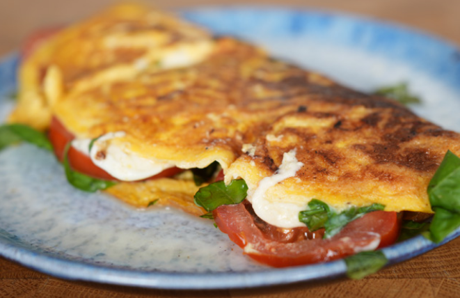

Home
Here are some delicious breakfast recipes to choose from
Caprese Omelette

Ingredients needed:
- 3 eggs
- 60g fresh mozzarella light
- 50g tomatoes
- 10g fresh basil
- 2g oil
- Salt and black pepper for seasoning
Instructions:
- Crack the eggs into a bowl and add a strong
pinch of salt and black pepper.
Mix with a fork and set it aside.
- Cut up the tomatoes and Mozzarella into
thin slices. Chop up the basil.
- Add the oil to a pan on medium heat.
Add eggs, and slowly push the edges of the
eggs towards the middle of the pan and tilt
the pan so the uncooked egg goes underneath
- Do this for about a minute, the middle of the
mixture should still be slightly raw. You should have
a big egg pancake. Add the mozzarella on one-
half of the eggs and close the lid. Let it cook for
about a minute so the cheese melts faster.
- Remove the lid, add in tomatoes and fresh basil.
Flip the side without cheese over the other side
to form an omelette. Done!
Macros:
- Calories: 322
- Carbs: 2
- Protein: 28
- Fats: 22